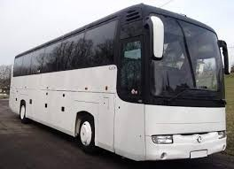
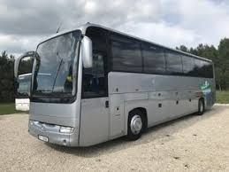
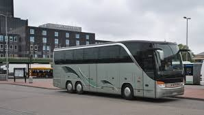
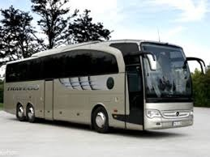

ПАСАЖИРСЬКІ ПЕРЕВЕЗЕННЯ ПО УКРАЇНІ!
Якщо Ви хочете потрапити в інше місто, а свого транспорту немає, пасажирські перевезення – прекрасне вирішення даної проблеми! Наша компанія надає послуги перевізника в сфері оренди автобусів. Налагоджені процеси, багатий досвід і великий автопарк дають нам можливість стати лідерами у сфері пасажирських перевезень! Серед наших клієнтів: Львівська міська рада, Львівська обласна державна адміністрація, Об’єднана профспілкова організація Державної прикордонної служби, і багато інших. Наші пасажирські перевезення Львів високо оцінив, адже ця співпраця вигідна з будь-якого боку !!!
ГОЛОВНЕ НАШЕ ЗАВДАННЯ:
забезпечити всі потреби клієнтів, які пов’язані з діловими й особистими поїздками. Під час організації автобусних перевезень ми орієнтуємося на комфорт і безпеку пересування по Києву, Львову чи будь-якому іншому місту країни. Завдяки великому сучасному автопарку, ми грамотно підбираємо (виходячи з конкретної ситуації та потреб) підходящий вид транспорту. Перевезення пасажирські здійснюються легковим транспортом!
КАРТА ПАСАЖИРСЬКИХ ПЕРЕВЕЗЕНЬ УКРАЇНА:
Нашими послугами можуть скористатися жителі всієї України, адже ми здійснюємо пасажирські перевезення в будь-якому місті країни, будь то Львів, Київ чи Харків.
НАШ АВТОПАРК:



